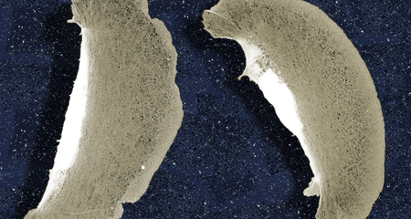

PMI members organize courses and provide research training in muscle, cell motility, and the cytoskeleton through graduate programs in the School of Medicine, the School of Arts and Sciences, and the School of Engineering and Applied Science.
See below to learn more about our courses and research.
Advanced Technological Development
The development of new technologies, motivated by significant biological problems is a major emphasis of the Institute. Imaging technology coupled to advanced video-enhanced light microscopy, confocal microscopy, infrared optical traps (laser tweezers) quantitative and spatially-resolved fluorescence detection for protein orientation and mobility and for ion-sensitive probes, localized laser photolysis of 'caged' molecules and digital image processing are emerging technologies with wide potential application. The Institute's efforts have resulted in the design and fabrication of novel instrumentation for biological electron and X-ray spectroscopy, in the synthesis and utilization of 'caged' compounds for laser photolysis studies of transient events associated with triggering of muscle contraction, time resolved polarization spectrophotometry and novel uses of fluorescently labeled proteins to study the assembly of filamentous systems in living cells. The PMI operates a Light Microscopy Core Facility for development of advanced techniques and an Optical Trapping and Protein Manipulation core facility under NIH Program Project Grant support. A new, highly capable multi-wavelength confocal microscope is supported by an NSF Shared Instrumentation Grant.
A very recent area of research concentration is nanotechnology. The Institute's involvement has been in development of techniques to manipulate and study single functioning protein molecules. In many enzyme and polynucleotide systems, important elementary events at the molecular level are obscured within the average behavior of a molecular population. Studying enzymes one at a time has only recently become technically feasible but new information, not otherwise available, can be gained from such an approach. Work in this area will allow, for the first time, measurements of time-resolved structural information, forces, elasticity and molecular displacements on single biomolecules.
The immediate interest in developing these new techniques is for investigating the molecular mechanisms underlying motor protein-based cell motility and muscle contraction. However these methods are applicable to all enzymes that undergo structural changes between compact domains during their functional activity. The PMI will serve as a resource center for single molecule nanotechnology studies of enzyme systems outside cell motility, welcoming other investigators to study their proteins of interest by these powerful methods.